Getting Started
An in-window tour of the layout and the tools, so a new user gets going fast.
Twelve editor tools that live in one window — built to cut friction and speed up Unity development.
In active development. One purchase includes every future update.
One docked window with a dropdown to switch tools and a settings page to reorder or hide them. Each tool is focused and does one job well.
An in-window tour of the layout and the tools, so a new user gets going fast.
Detect the colors a prefab actually uses and recolor it, saving new materials and textures.
Scatter a prefab across the scene with a brush, with randomized rotation and scale.
Drag a box in the Scene view to select the objects inside it, filtered by layer, tag, and component.
Synthesize Unity terrain sculpt brushes procedurally and save them as .brush assets.
Render a prefab to a transparent inventory icon with optional underlay and overlay.
Pull selected prefabs and their dependencies out of a large pack into self-contained copies.
Keep the changes you make during Play Mode by writing them back to the scene when you exit.
Flag docs that have fallen out of date with the code they describe, compared by edit time.
Capture Game view frames during play for review or to hand to an AI.
Slice a section out of an audio clip, shape it with EQ, drive, and normalize, and save it as a new clip.
Export scene, object, prefab, project settings, and ScriptableObject data to clean markdown.
Run report tasks over a folder: a manifest, an orientation doc, a file tree, and project-health scans.
Every tool docks as a tab next to the Inspector. Click any shot for the full image.
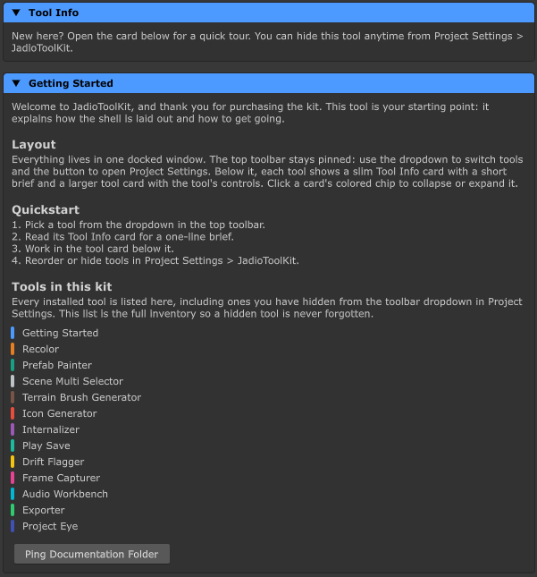
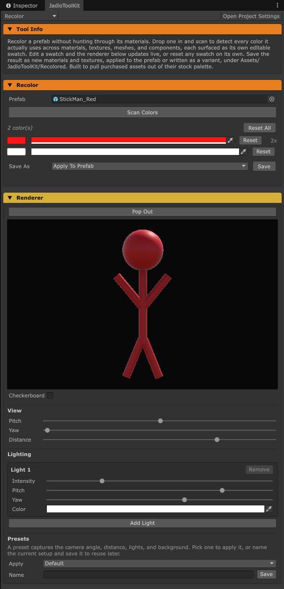
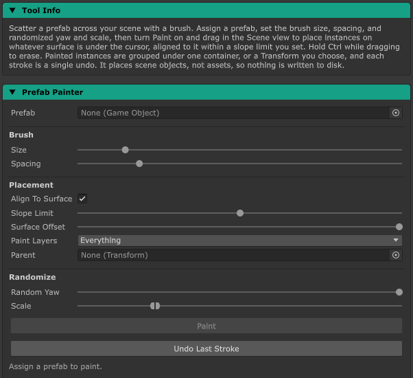
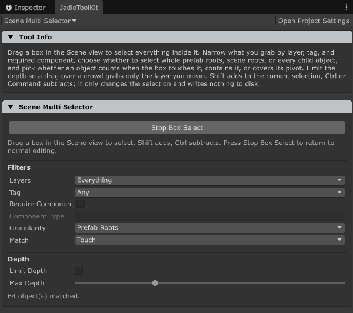
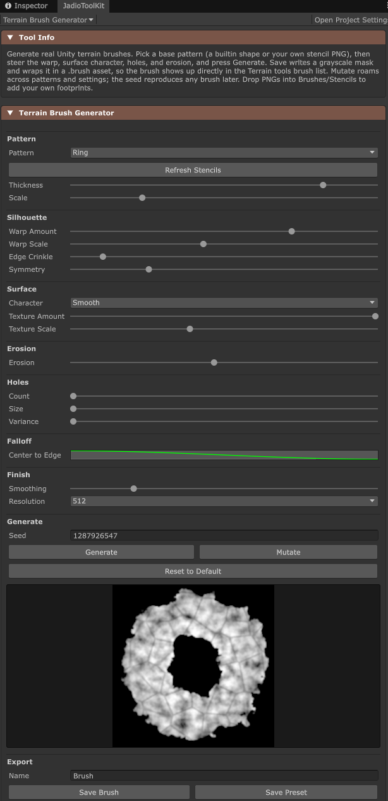
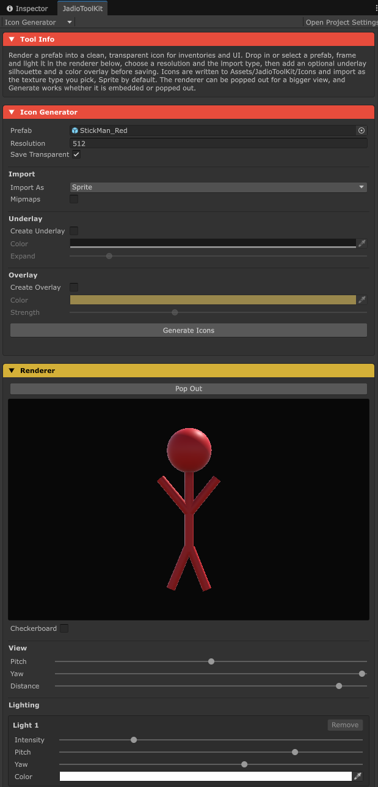
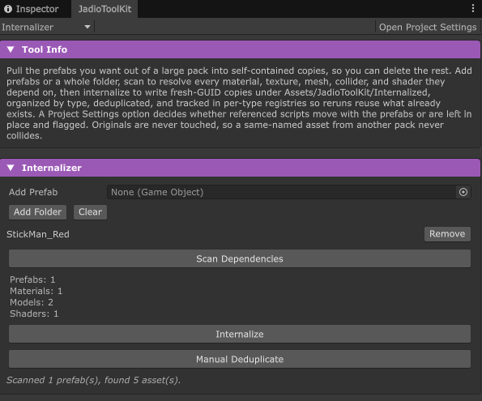
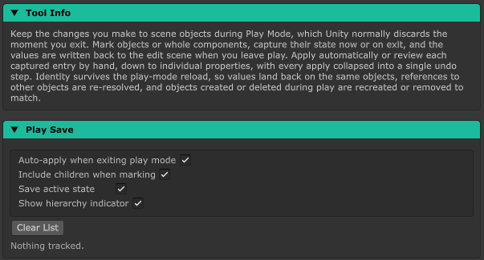
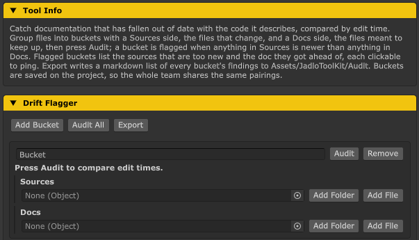
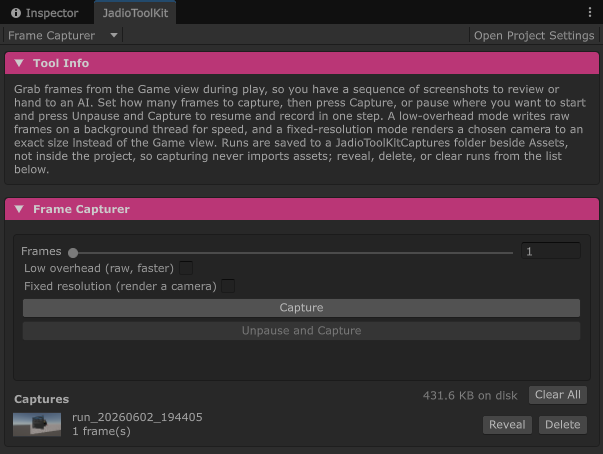
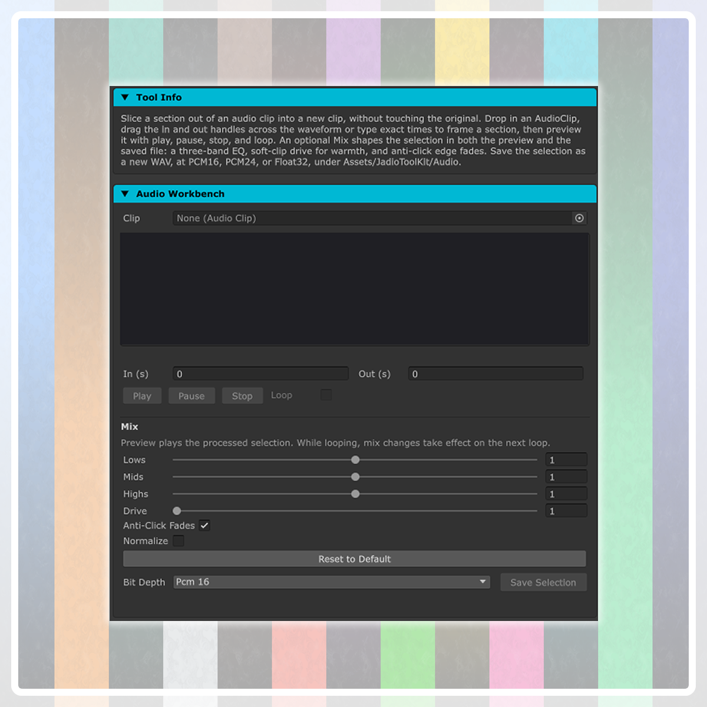
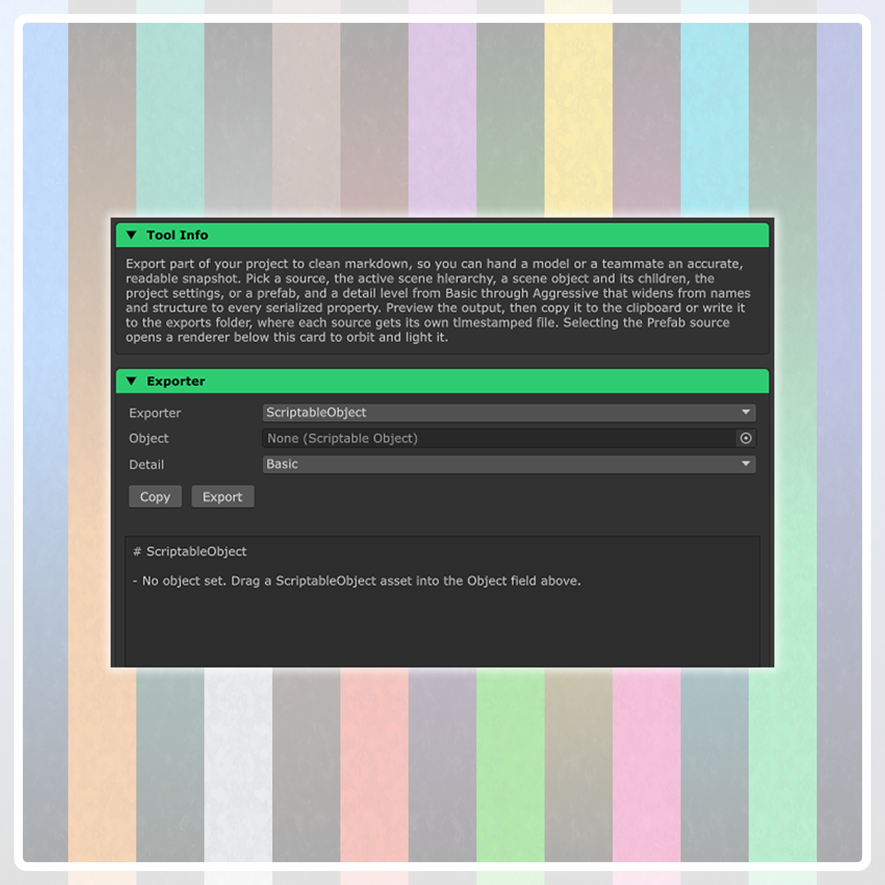
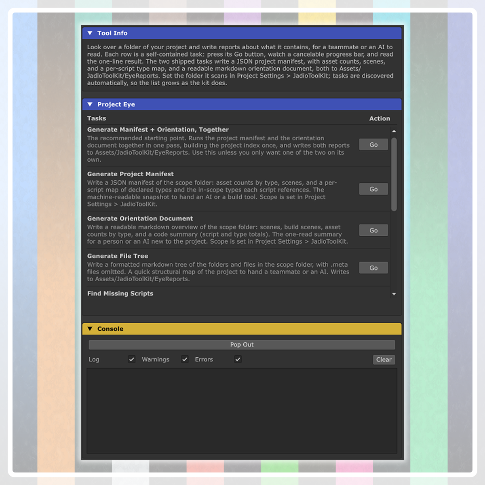
Twelve tools, one window, and every future update included with your purchase.
Get JadioToolKit